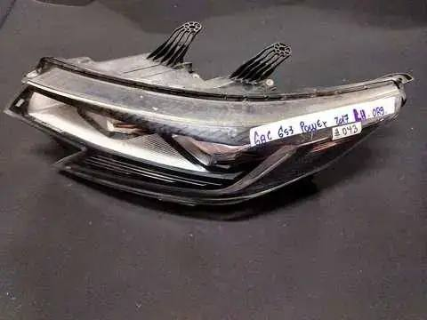
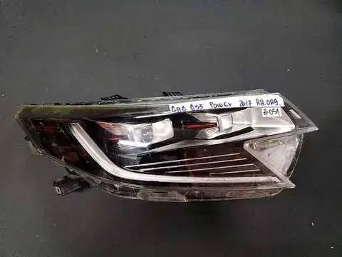

Piezas de carrocería para GAC GS3 Power
14 piezas disponibles hoy para GAC GS3 Power, cada una con su foto y su código: faros y lámparas delanteras (7), halógenas y faros antiniebla (2), lámparas traseras (1), retrovisores (1). Dinos el año de tu carro y te confirmamos si le sirve.
- Garantía de 3 días
- Foto real de cada pieza
- Efectivo, Yappy o ACH
- Lunes a sábado, 8:00 a. m. a 5:00 p. m.
Faros y lámparas delanteras para GAC GS3 Power 7
 041GS3 Power2021-26 · lado derecho · original
041GS3 Power2021-26 · lado derecho · original
043GS3 Power2021-26 · lado izquierdo · original 048GS3 Power2021-26 · lado izquierdo · original
048GS3 Power2021-26 · lado izquierdo · original 050GS3 Power2021-26 · lado izquierdo · original
050GS3 Power2021-26 · lado izquierdo · original
051GS3 Power2021-26 · lado derecho · original 052GS3 Power2021-26 · lado izquierdo · original
052GS3 Power2021-26 · lado izquierdo · original 053GS3 Power2021-26 · lado derecho · original
053GS3 Power2021-26 · lado derecho · original HA046GS3 Power
HA046GS3 Power 311GS3 Power
311GS3 Power DDI026GS3 Power
DDI026GS3 Power R020GS3 Power
R020GS3 Power